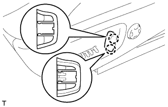
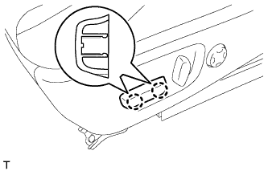

ПЕРЕКЛЮЧАТЕЛЬ ЭЛЕКТРОПРИВОДА СИДЕНЬЯ (без запоминающего устройства) > УСТАНОВКА |
| 1. УСТАНОВИТЕ ПЕРЕКЛЮЧАТЕЛЬ ЭЛЕКТРОПРИВОДА ЛЕВОГО ПЕРЕДНЕГО СИДЕНЬЯ |
Подсоедините разъем переключателя электропривода сиденья.
Установите переключатель электроподъемника и закрепите его 3 винтами.
| 2. УСТАНОВИТЕ ЗАЩИТНЫЙ ЩИТОК ПОДУШКИ ЛЕВОГО ПЕРЕДНЕГО СИДЕНЬЯ |
Присоедините 3 зажима жгута проводов и подсоедините разъем жгута электропроводки сиденья.
Введите в зацепление 3 захвата, чтобы закрыть крышку жгута проводов.
Освободите фиксатор, присоединенный к пружине подушки сиденья, и установите его на защитный щиток подушки.
Присоедините 2 фиксатора, 3 захвата и направляющую.
Присоедините направляющую внутреннего защитного щитка подушки переднего сиденья № 1 и вверните винт.
Подсоедините разъем электродвигателя подъема.
| 3. УСТАНОВИТЕ РУЧКУ ПЕРЕКЛЮЧАТЕЛЯ ЭЛЕКТРОПРИВОДА НАКЛОНА СИДЕНЬЯ |
|  |
Введите в зацепление 2 захвата, чтобы закрепить ручку.
| 4. УСТАНОВИТЕ РУЧКУ ПЕРЕКЛЮЧАТЕЛЯ ЭЛЕКТРОПРИВОДА ПЕРЕМЕЩЕНИЯ СИДЕНЬЯ ПО НАПРАВЛЯЮЩИМ И ПО ВЕРТИКАЛИ |
|  |
Введите в зацепление 2 захвата, чтобы закрепить ручку.
| 5. УСТАНОВИТЕ ПЕРЕДНЕЕ СИДЕНЬЕ В СБОРЕ |
Установите переднее сиденье в сборе (Нажмите здесь).